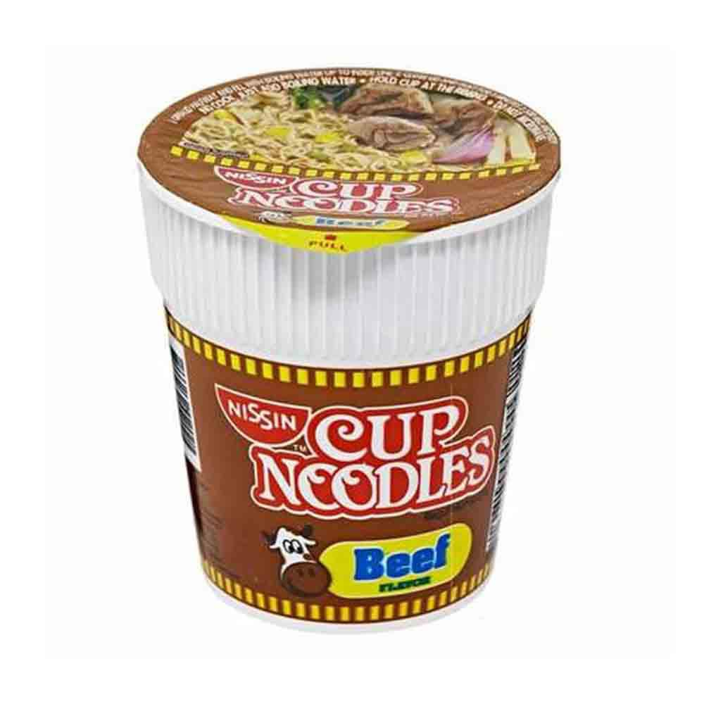

Home
Cup Noodles

Description
How to boil eggs – Bring water to a boil first, add eggs, start the timer. 6 minutes for runny yolks, 8 minutes for soft boiled (my go-to!), 10 minutes for hard boiled. Peel under water to make life easier.
This method will produce consistent results to the level of doneness you desire no matter what pot you use and how weak or strong your stove is.
Ingredients
Steps
- Boil water first.
- Gently lower in fridge-cold eggs.
- Lower the heat slightly – so the eggs don’t crack due to being bashed around but water is still at a gentle boil.
- Start the timer – 6 minutes for runny yolks, 8 minutes for soft boiled, 10 minutes for classic hard boiled, 15 minutes for unpleasant rubbery whites and powdery dry yolks.
- Transfer into a large bowl or sink of cold water.
- Peel under water starting from the base (it’s easier).
Top